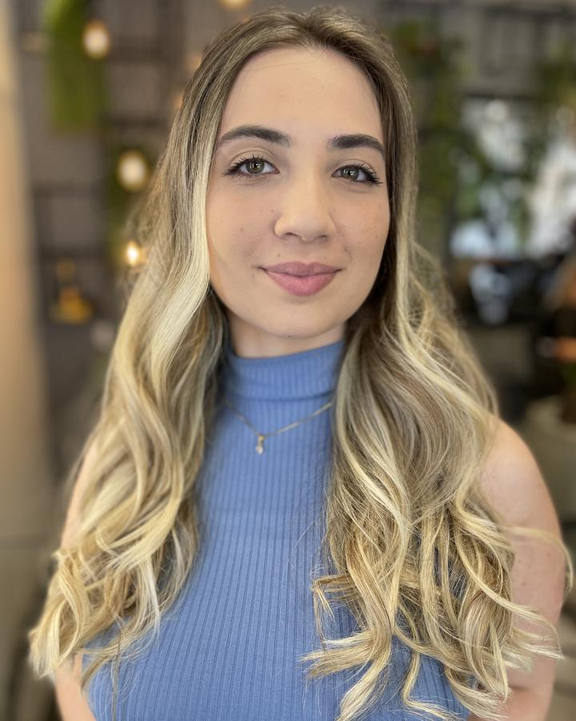
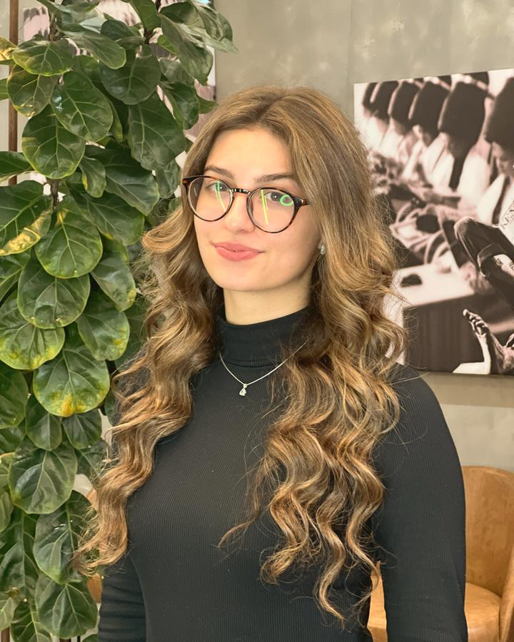

A leitura do seu diagnóstico, do jeito que eu leria se a gente estivesse conversando.
Olá! Que bom que você respondeu o diagnóstico.
Se você foi até o fim, é porque alguma coisa ali bateu. Preparei esta leitura para te mostrar, com honestidade, o que costuma estar por trás do que você respondeu. E, principalmente, que existe caminho.
Quero começar por uma coisa que talvez ninguém tenha te dito: o que trava as suas mechas não é falta de talento, nem falta de esforço. Tem explicação, tem nome, e tem caminho.
Se você já faz mechas e o resultado muda de cliente para cliente, se acerta na maioria das vezes mas não sabe explicar o que fez diferente, ou se ainda refaz mecha sem cobrar para não perder a cliente, saiba que esse padrão se repete em quase todo profissional que chega até aqui.
Pode ter começado há alguns meses ou durar anos. E já vem custando caro: em tempo, em produto e no preço que você consegue cobrar. Isso tem um nome.
Você provavelmente já fez curso, já assistiu vídeo, já seguiu perfil de referência. Aprendeu bastante. E, na hora do atendimento, travou de novo.
Faz sentido. Todas essas saídas entregam informação, e o que trava um profissional nas mechas não é falta de informação. O nome disso é improviso: a distância entre o que você faz e o que você consegue repetir de propósito.
Curso gravado te mostra como fazer. Não corrige o que você está fazendo de errado, porque foi gravado para mil pessoas e não enxerga a sua folha, o seu timing, a sua divisão. Dá para assistir quarenta horas de conteúdo e continuar repetindo o mesmo erro, porque o erro é seu, é específico, e ninguém está olhando para ele.
A diferença entre os dois não é talento. É prática corrigida, e isso se constrói.
Se já fez sentido para você, é só tocar aqui.
O Método Cabelo de Segunda existe para tirar o improviso do seu atendimento. São cinco frentes, ao mesmo tempo:
Domínio técnico não vem de mais conteúdo. Vem de prática corrigida, toda semana, no seu próprio trabalho.
O caminho começa por uma sessão estratégica: trinta minutos, individual, em que o Rômulo lê o seu caso, aponta o gargalo com nome e desenha o próximo passo. Não é apresentação de produto.
O que você quer, fazer mechas sem medo de errar, é totalmente possível. Você sai da sessão com clareza, decida ou não seguir.
São poucos horários por semana, porque cada sessão é preparada antes.
Trabalhos do próprio Rômulo, publicados com autorização das clientes que aparecem:


Antes de mentorar, o Rômulo era quem as marcas contratavam para treinar equipe de salão. Passou 2024 dentro de dezenas de salões corrigindo o trabalho de outros profissionais, ao vivo, na cadeira.
Dar o primeiro passo é simples, e no seu tempo. Se esta leitura fez sentido para você, é só tocar no botão que a gente já organiza tudo.